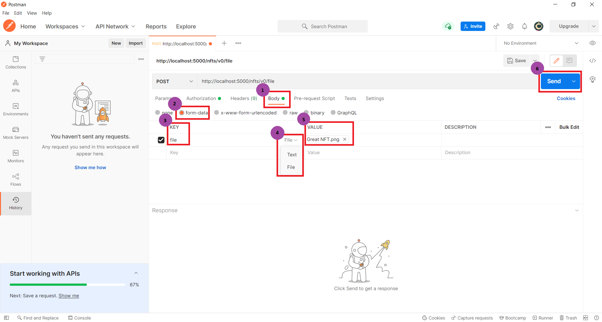
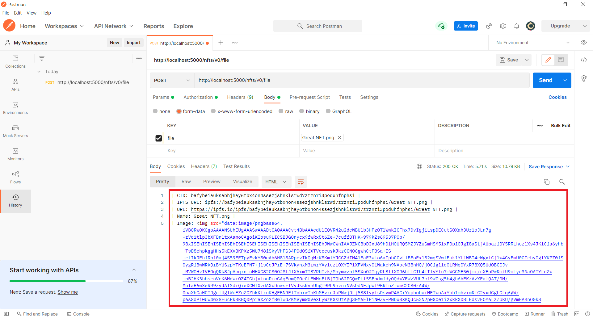

You need to open postman and do the next steps.
First: Set the method in post (by default get), and fill the bar with the next endpoint http://localhost:5000/v0/file.
Second: Go to the tab Authorization.
Third: Go to the type, and choose API Key for authorization method.
Fourth: The name of the Key is APIO_KEY, in value user your Api-Key sent to your mail after complete the form, and add to Header.
After that you are going to sent the file.
First: Go to the tab Body.
Second: Inside body let's press the radius button of the form-data.
Third: The submited file must have the key name file.
Fourth: Then uncollapse and choose the File data upload.
Fith: In value pick your image, at the moment we only accept one image.
Sixth: Send and waint.
This is a normal response, if you get this congratulations you have upload your image.
In the response you receive the CID, the IPFs URL, the URL to see your image, the Name of your file and the image to have a preview.